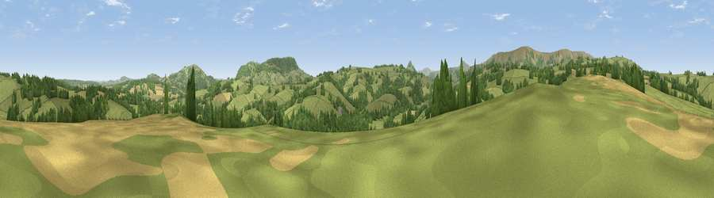

Viewpoint near Rowlestone
#29024 in England · top 69% of its area beats it · near RowlestoneWhere it is
The exact computed spot (SO 37075 25925). Click the marker for map links.
The view, rendered

A 360° render of this exact spot computed from the terrain model, tree cover and land cover — summer colours, afternoon light, calibrated against photographs of famous viewpoints. Real trees, hedges and buildings will differ in detail.
The panorama
Grey silhouette: terrain skyline in each direction (720 bearings, Earth curvature and refraction included). Dashed green: skyline with trees (+15 m) and buildings (+8 m) as obstacles. Blue strip: how far the ground is visible on each bearing.
Where the view opens
Wedge length = distance to the farthest visible ground on that bearing (vegetation-aware). Rings at 10, 25 and 50 km.
What fills the view
72% grassland · 23% woodland · 5% cropland ·
Angular shares of the visible panorama (visual magnitude), not map area. Landscape diversity 0.33 (0–1 Shannon).
Key numbers
More beautiful places nearby
The staircase of upgrades: each row has a higher view potential than everything closer. Driving times are estimates from straight-line distance, calibrated against real road routing — check an actual route before setting out.
| Place | Direction | Drive | Score |
|---|---|---|---|
| Viewpoint near Rowlestone | N · 2 km | ~5 min | 45.8 |
| Viewpoint near Kentchurch | ENE · 5 km | ~11 min | 65.2 |
| Viewpoint near Clodock | W · 6 km | ~12 min | 79.6 |
| Garway Hill | E · 7 km | ~14 min | 84.6 |
| Millennium Hill | ENE · 41 km | ~61 min | 86.9 |
| Worcestershire Beacon | ENE · 44 km | ~64 min | 87.1 |
| Viewpoint near West Quantoxhead | SSW · 87 km | ~111 min | 87.9 |
| Viewpoint near West Quantoxhead | SSW · 88 km | ~112 min | 88.7 |
51.92827, -2.91653 · source: screening · position refined by local search. Computed location — check access rights before visiting.